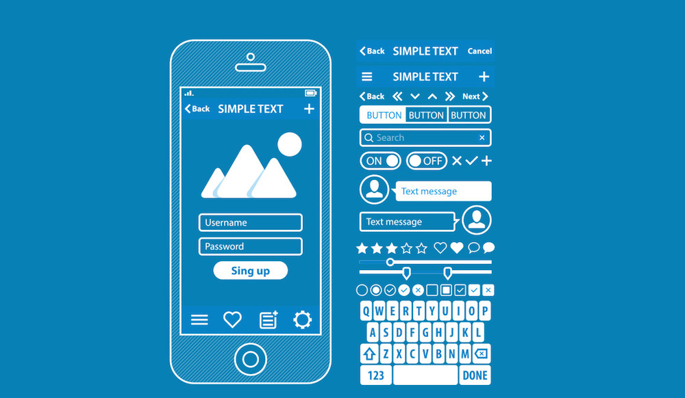

Objetivos al diseñar una interfaz web
La finalidad de un buen diseño de interface es proporcionar un marco de uso que permita realizar las tareas de la mejor forma posible. Por eso, los objetivos de un diseñador de interfaces deben ser dos: la simplicidad y la coherencia.
